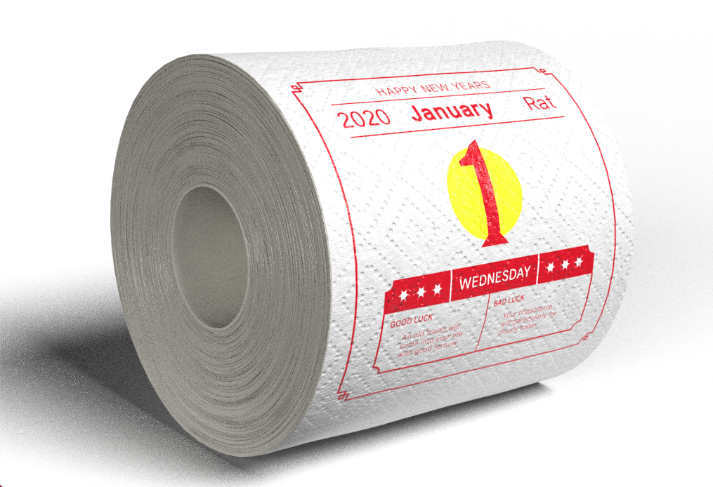
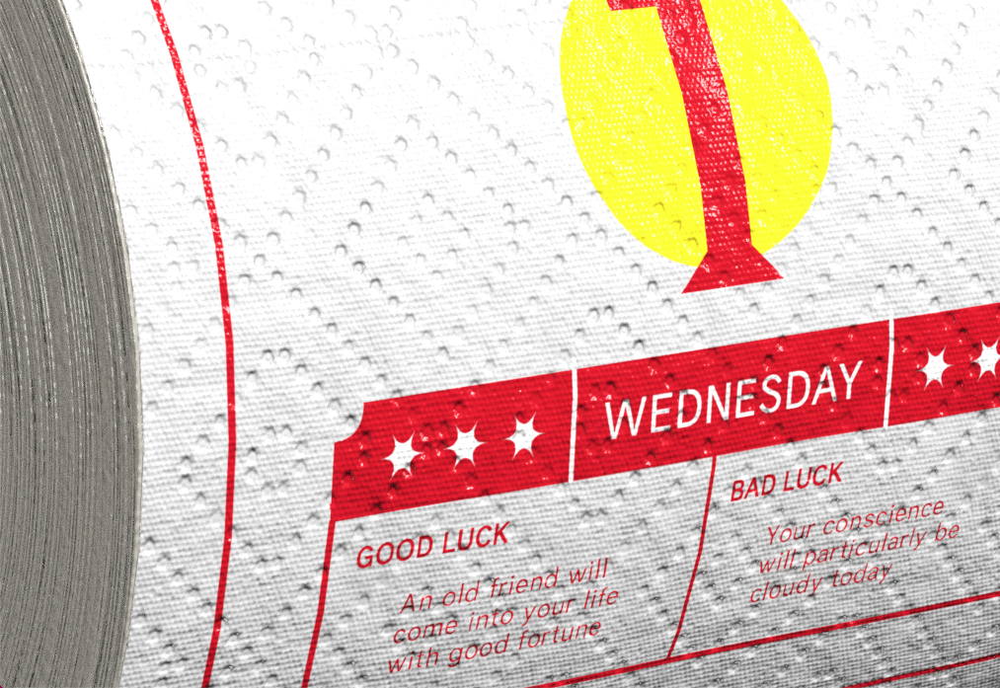
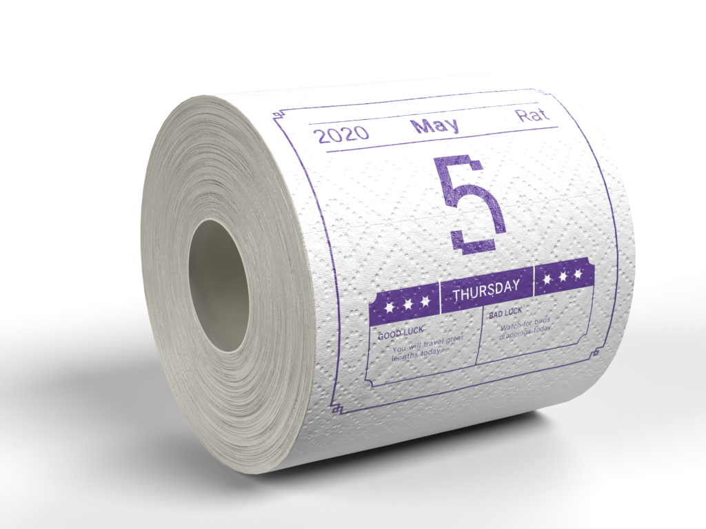
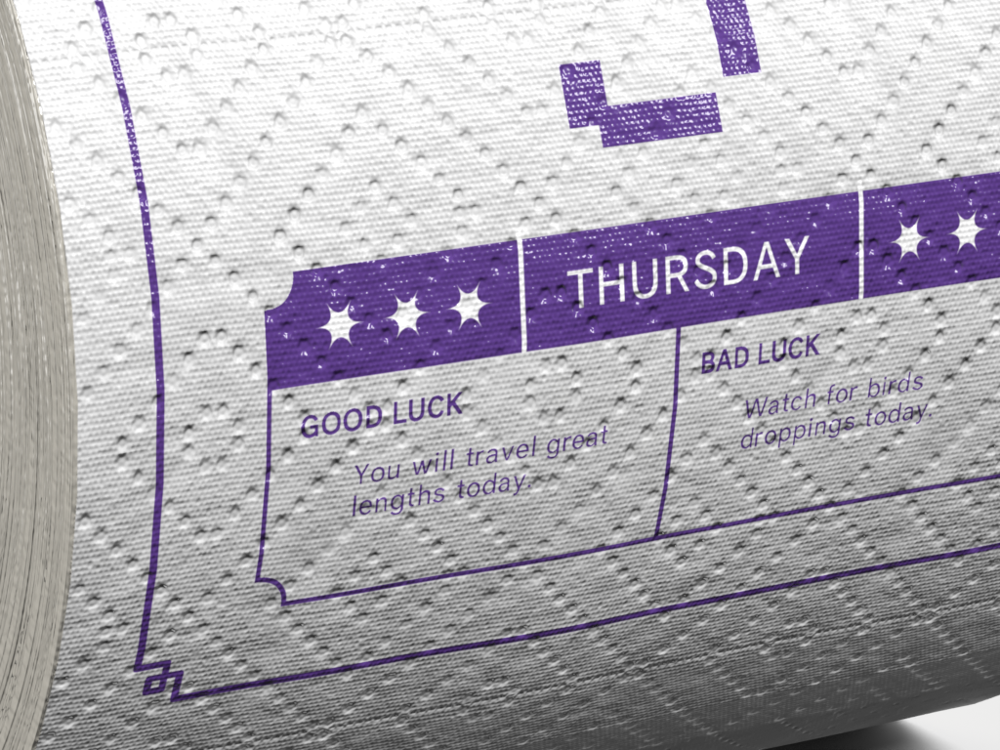
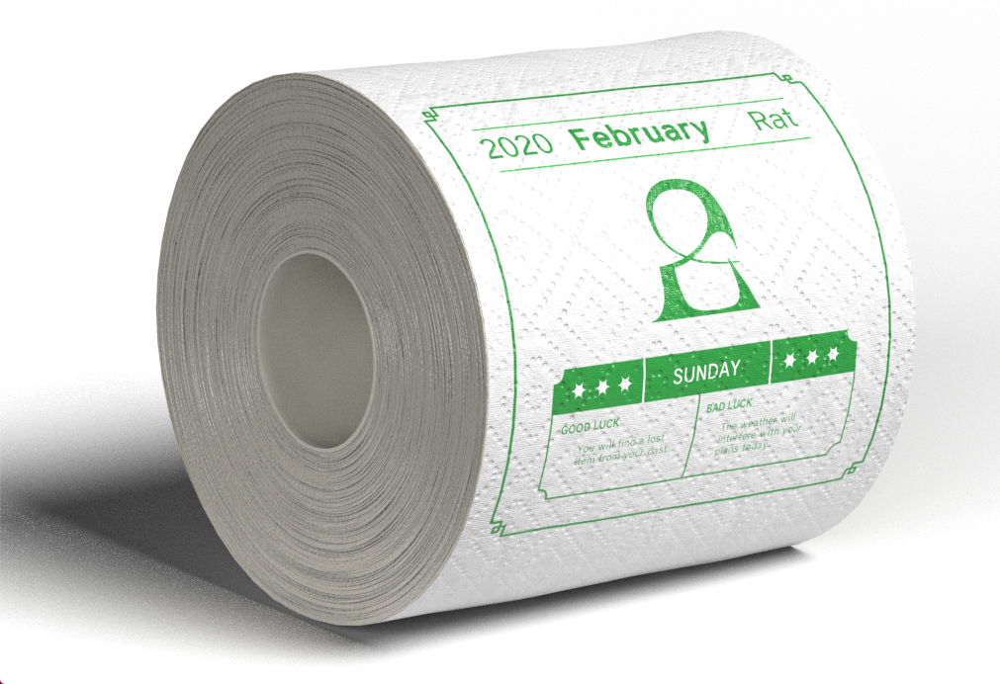
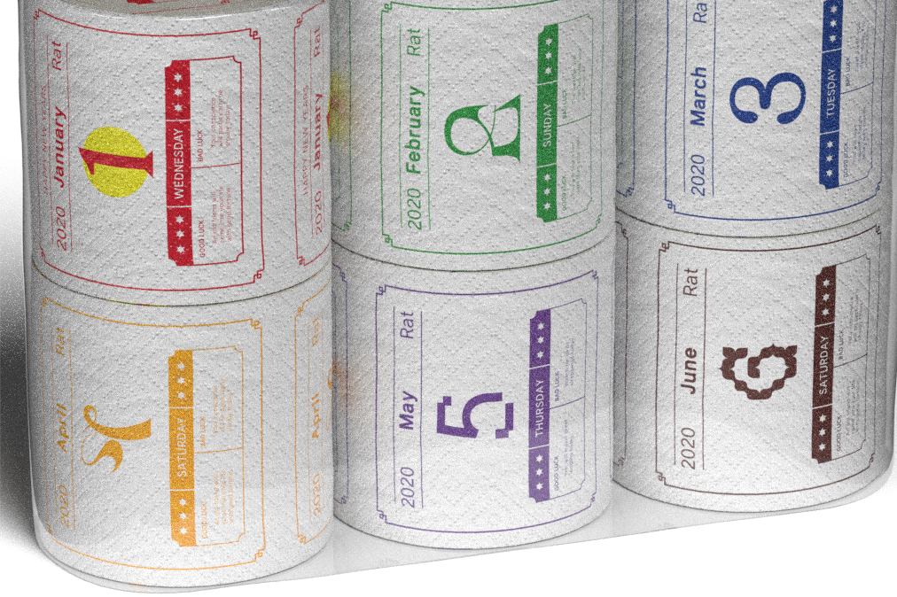
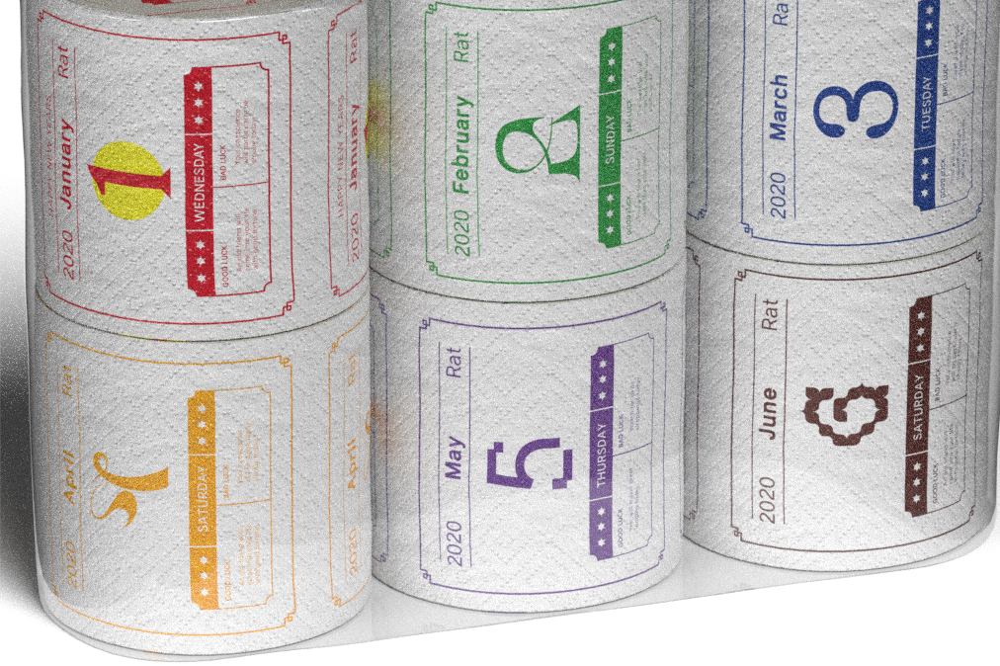

Need help rationing your toilet paper? Keep forgetting what day it is? Quarantine Calendar is for you. It is a daily calendar made out of toilet paper. Each roll is one month, available to purchase as a 12 pack. On each day, it also tells you good luck and bad luck fortunes.
    
 
